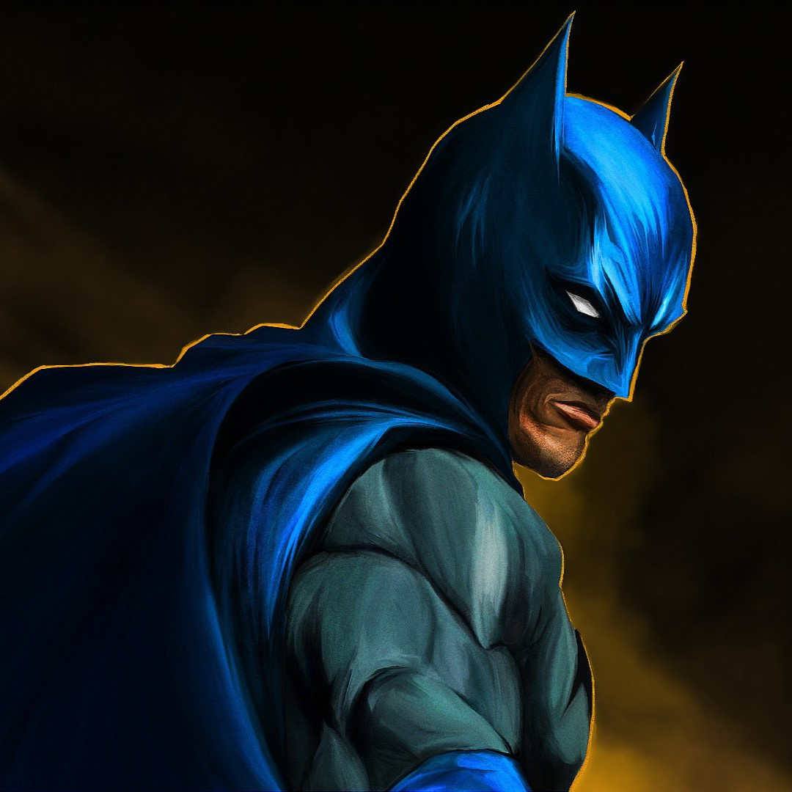
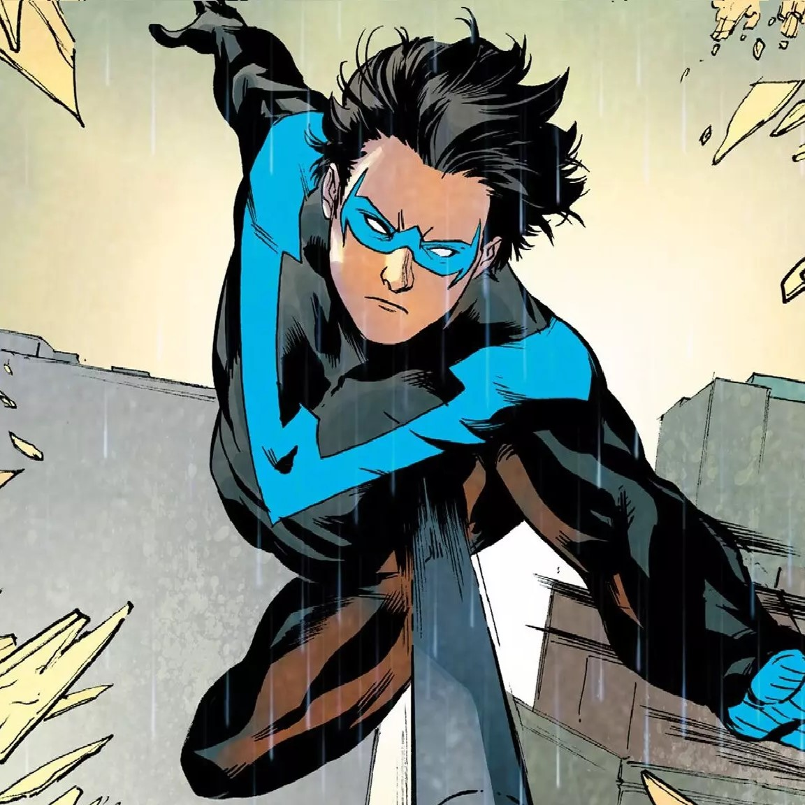
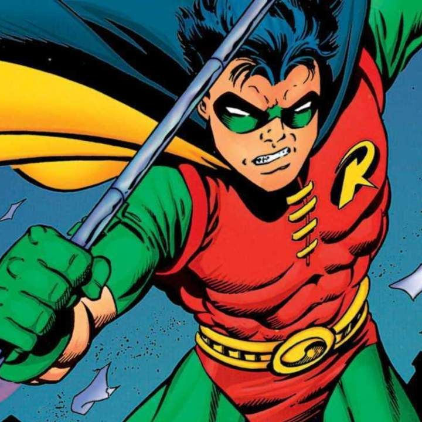
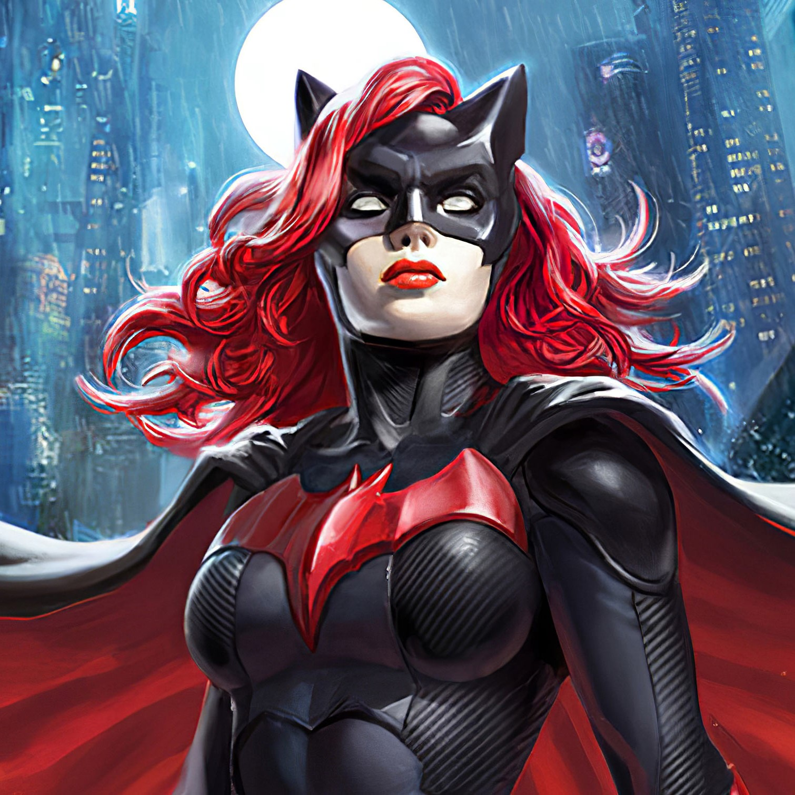
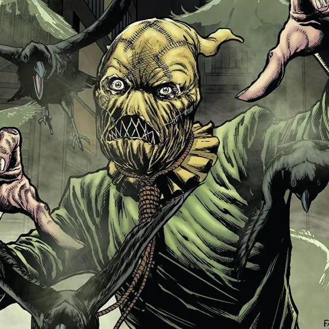
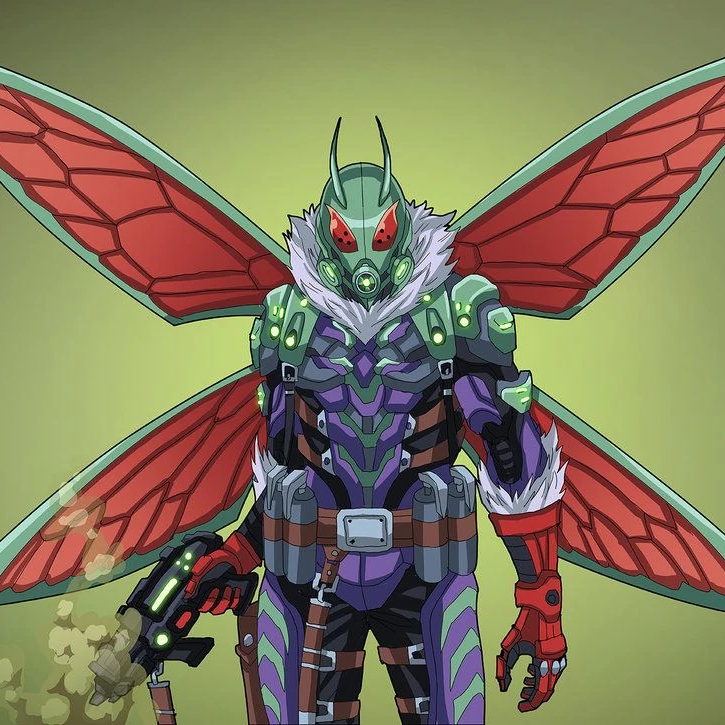

A Batgirl é uma heroína da DC Comics, criada por Bill Finger e Shelly Moldoff, com sua primeira aparição em Detective Comics #359 (1967). Ela é uma das principais aliadas do Batman, combatendo o crime em Gotham City. Batgirl é altamente treinada em combate corpo a corpo, estratégia e no uso de gadgets avançados. Embora não tenha superpoderes, sua inteligência e habilidades atléticas são notáveis. Ela é uma figura chave na Batfamília, muitas vezes agindo como parceira e aliada de Batman na luta contra vilões. A versão mais conhecida de Batgirl é Barbara Gordon, que se inspirou no Batman para combater o crime. Após ser gravemente ferida pelo Coringa em The Killing Joke, ela se tornou Oráculo, uma hacker e estrategista, antes de voltar a ser a Batgirl em versões mais recentes. Batgirl apareceu em várias animações, séries de TV e filmes. Sua personagem também foi planejada para um filme solo, inicialmente para a HBO Max, mas enfrentou mudanças em sua produção. Batgirl foi uma das primeiras heroínas a ganhar destaque nos quadrinhos, representando um símbolo de empoderamento feminino e se tornando uma integrante essencial da Batfamília.
ALIADOS
BATMAN
Mentor e aliado constante.
ASA NOTURNA
Par romântico e parceiro em várias missões.
ROBIN
Parceiro de combate ao crime.
BATWOMAN
Parceira ocasional no combate ao crime em Gotham.
VILÕES
CORINGA
Responsável pela Piada Mortal.
ESPANTALHO
Vilão clássico que usou seus medos contra ela.
DUAS-CARAS
Já teve confrontos marcantes com a Batgirl.
MARIPOSA ASSASSINA
Um vilão clássico que tentou ser o "Batman dos criminosos".